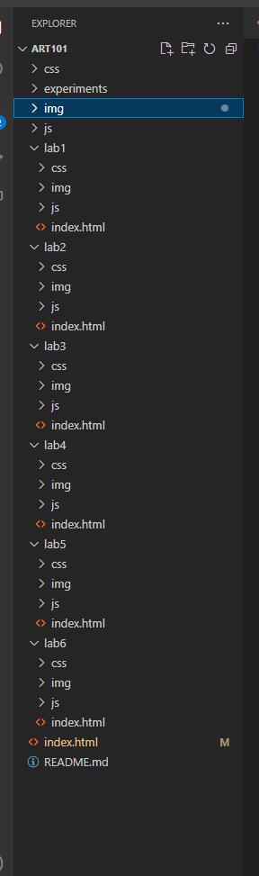
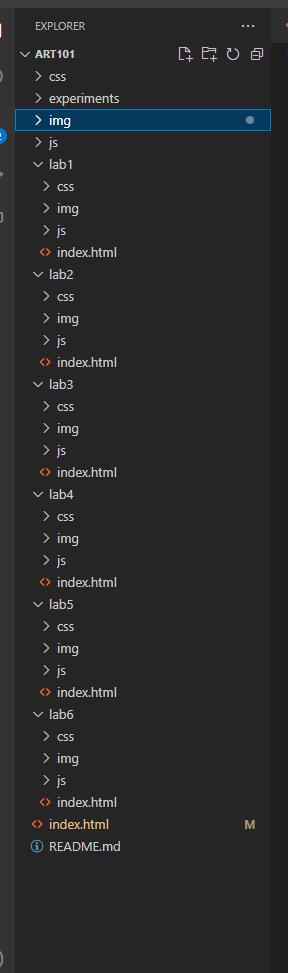

Lab 3 - File Tree
The lab is about file trees.
Challenges
none.
Results
This sure is a functional html file.
have a large image :)
a file tree.

some html.
a website.
The lab is about file trees.
none.
This sure is a functional html file.
have a large image :)
a file tree.
some html.
a website.